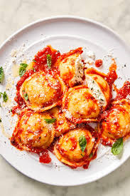

Ravioli

Four cheese ravioli
This recipe will teach you how to make 4 cheese ravioli with marinara sauce.
Ingredients:
- Dough: All-purpose flouer, salt, eggs, water, and olive oil
- Filling: Ricotta, Parmesan, mozzarella and provolone cheeses, an egg, and dried parsley
- Sauce: Classico red sauce from the store
Steps
- Make the dough: Make and knead the dough, then form it into a ball. Tightly wrap the ball and refrigerate for at least 30 minutes.
- Make the filling: Mix the filling ingredients together and set aside.
- Assemble the ravioli: Roll out the dough into sheets. Drop cheese filling onto the dough about an inch apart. Cover with the top sheet of pasta and make a seal around each portion of filling. Cut out individual ravioli, then seal the edges.
- Cook and bake the ravioli: Boil the ravioli in salted water until the dumplings rise to the top and the filling is hot. Drain well.
- Serve the ravioli: Divide the ravioli between bowls, top with the warmed marinara sauce, then finish with the sauce.
Home